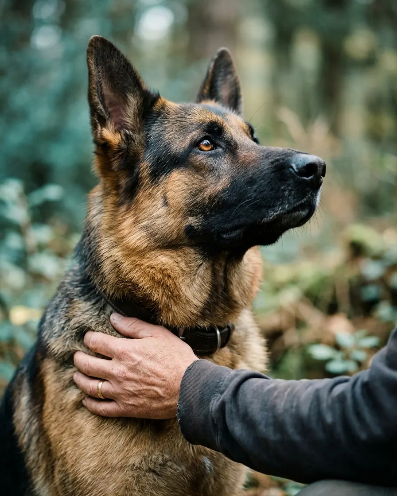
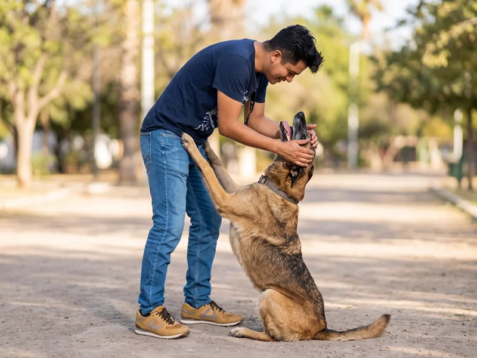
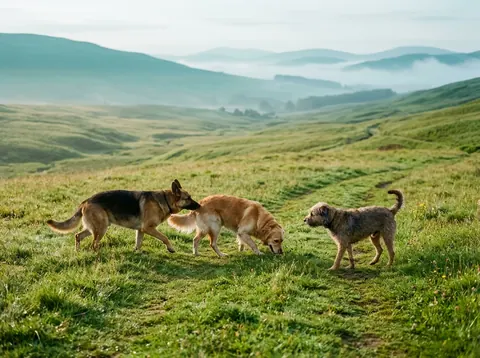
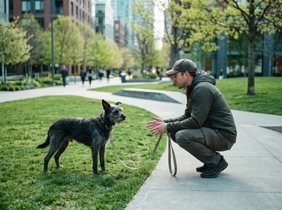
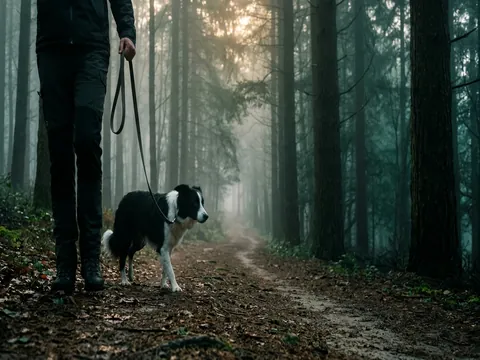
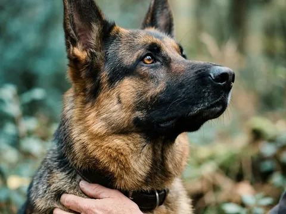
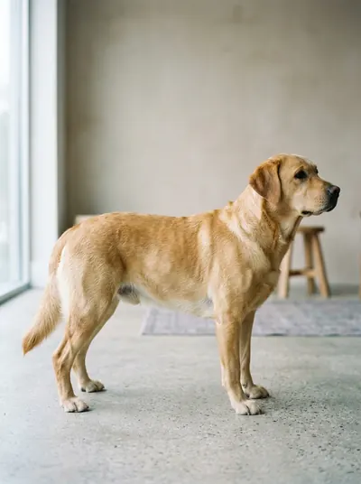
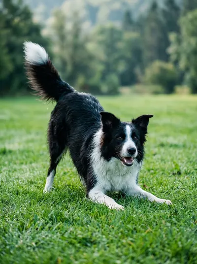
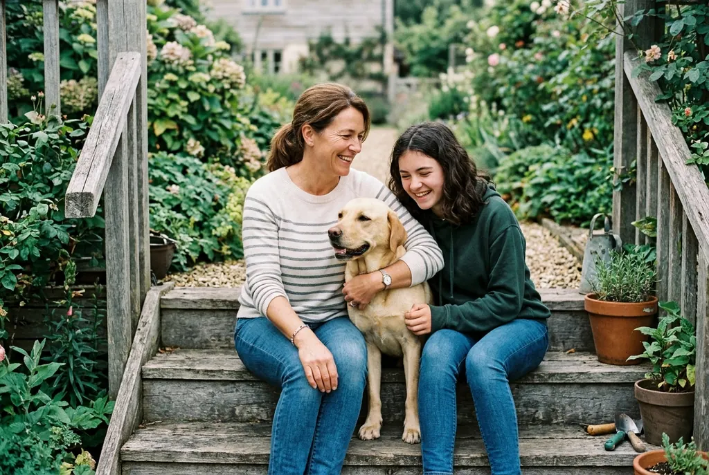
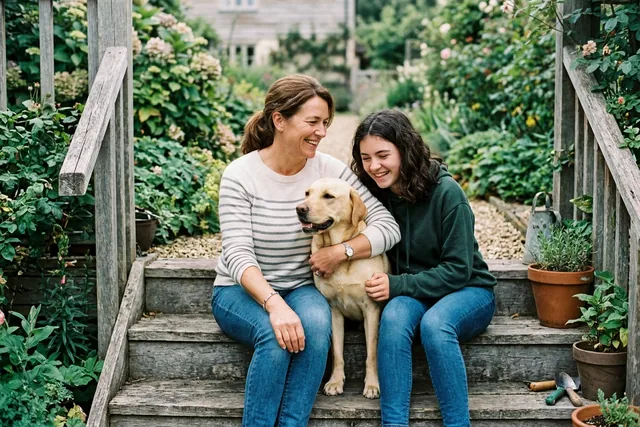

Psicología y comportamiento
Comprensión del comportamiento, necesidades emocionales y comunicación canina.

Psicología y adiestramiento canino
Psicología, comunicación y adiestramiento canino en Monterrey facilitado por Javier Baños para construir una relación equilibrada entre tú y tu mejor amigo.

Filosofía Loboalpha
Cada conducta tiene un origen. Detrás de un ladrido, un tirón de correa o un miedo repentino hay una emoción, una necesidad o un mensaje que tu perro está intentando expresar.
En Loboalpha no buscamos únicamente que tu perro obedezca. Buscamos que tú lo entiendas y que él te entienda a ti. Cuando comprendemos su conducta, sus necesidades y su lenguaje, el entrenamiento deja de ser una imposición y se convierte en una conversación.
Leemos lo que hace tu perro y, sobre todo, por qué lo hace.
Físicas, emocionales y sociales: la base de su equilibrio.
Un lenguaje compartido para una relación clara y equilibrada.

Conoce a tu instructor
Facilitador de comunicación intuitiva con animales · Especialista en conducta canina
Trabajar con animales exige mucho más que comandos: requiere presencia, sensibilidad y una profunda capacidad de escucha.
Con experiencia práctica en el trabajo directo con perros y sus familias en Monterrey y su área metropolitana, Javier Baños acompaña cada proceso desde una perspectiva empática, clara y respetuosa. Su enfoque se centra en comprender qué vive, siente y necesita el animal para construir una convivencia armoniosa y libre de castigos.
Nuestras especialidades
Desde la psicología y la etología hasta el método natural y la comunicación intuitiva: acompañamos a cada animal y a su familia según sus necesidades reales en Monterrey.
Comprensión del comportamiento, necesidades emocionales y comunicación canina.

Estudio y comprensión del comportamiento natural y social de los perros.

Identificación y atención de conductas problemáticas, como reactividad, miedos, ansiedad y agresividad.

Programas de intervención conductual adaptados a las necesidades de cada perro.

Desarrollo de hábitos, comunicación y convivencia saludable entre perros y familias.

Entrenamiento de comandos, autocontrol, atención y respuesta a instrucciones.

Educación canina basada en el respeto, el instinto natural y la cooperación sin coerción ni castigos.

Espacio de conexión profunda facilitado por Javier Baños para sintonizar con los mensajes y emociones del animal.
Atención personalizada en Monterrey
Detrás de cada conducta hay una causa emocional y relacional. Atendemos el origen del problema para que la solución sea sólida y duradera.
Hacia otros perros, personas o protección de recursos (comida, juguetes, espacio). Trabajamos la raíz del miedo y la inseguridad.
Ladridos desmedidos, abalanzarse o tensión incontrolable con la correa frente a estímulos del entorno urbano o el parque.
Morder muebles, escarbar puertas o destruir objetos al quedarse solo, detonado por ansiedad por separación o sobreestimulación.
Conflictos entre perros que viven bajo el mismo techo o al cruzarse en paseos; restablecemos la calma y los protocolos de convivencia.
Desborde de excitación al llegar a casa o recibir visitas. Enseñamos autocontrol y alternativas de saludo tranquilas.
Marcaje territorial en interiores, pérdida de hábitos higiénicos o accidentes por estrés y cambios de rutina en el hogar.
Llegada de un nuevo integrante a la familia (bebé, nueva pareja u otra mascota), mudanzas o dinámicas familiares tensas.
Método natural de educación
En Loboalpha trabajamos con un enfoque de educación positiva y etológica que respeta los tiempos, la naturaleza y la mente de cada perro.
No utilizamos métodos aversivos, collares de castigo ni intimidación física. La verdadera obediencia y el equilibrio no nacen del miedo, sino de un vínculo de cooperación voluntaria donde el perro comprende qué esperamos de él y se siente seguro en su entorno familiar en Monterrey.
Identificamos las señales tempranas de estrés o incomodidad antes de que se conviertan en reactividad o agresividad.
Atendemos la emoción que detona la conducta (miedo, frustración o sobreexcitación) en vez de silenciar el síntoma.
Construimos hábitos y respuestas sólidas a través de la motivación, reforzando la calma y la seguridad personal del perro.
Te enseñamos pautas claras para que seas el referente de calma y liderazgo positivo que tu perro necesita en casa.
El lenguaje de tu perro
Los perros no hablan con palabras: hablan con todo su cuerpo. Su postura, su mirada, sus movimientos y pequeñas señales revelan cómo se sienten en cada momento. Aprender a leerlas es el primer paso para responder de forma justa y oportuna.




Importante: ninguna señal se interpreta de forma aislada. El contexto, la historia y el conjunto del cuerpo de cada perro son los que dan significado a su comunicación.
Servicio diferenciado · Javier Baños
Las sesiones de comunicación intuitiva representan un espacio íntimo de sintonía y escucha activa para comprender el mundo interior de tu compañero animal.
Esta actividad no busca enseñar comandos ni modificar conductas por entrenamiento. Es un puente de percepción y empatía que permite descifrar qué siente, qué le preocupa o qué mensaje desea comunicar tu animal a su familia.
Facilitada de forma individual por Javier Baños, la comunicación intuitiva se extiende a perros, gatos y otros animales de compañía, abordando situaciones sensibles con respeto absoluto:
“Cuando dejamos de imponer lo que queremos y aprendemos a escuchar lo que ellos sienten, el vínculo se vuelve indestructible.”
— Javier Baños · Facilitador de comunicación intuitivaMetodología Loboalpha
No existen fórmulas universales. Cada intervención nace de comprender a tu perro, a tu familia y el entorno en el que conviven.
Conocemos a tu perro en su contexto: rutinas, entorno, historia y la relación con su familia.
Analizamos qué hace tu perro, cuándo lo hace y qué función cumple esa conducta para él.
Detectamos las necesidades físicas, emocionales y sociales que están influyendo en su conducta.
Diseñamos un plan a la medida de tu perro, de tus objetivos y de tu estilo de vida.
Te enseñamos a comunicarte con tu perro para que el cambio continúe en casa, todos los días.
Revisamos avances, ajustamos la estrategia y consolidamos los resultados a lo largo del proceso.

Conexión humano-canina
Cuando tu perro se siente comprendido, la casa cambia: los paseos se disfrutan, las visitas dejan de ser un problema y la convivencia se vuelve tranquila.
Tener un perro es una responsabilidad y también un vínculo profundo. Te acompañamos con empatía y sin juicios para que ese vínculo se construya desde la confianza, el respeto y una comunicación clara.
Formación vivencial en Monterrey
Espacios presenciales y en línea con cupo reducido para practicar en campo, desarrollar la calma y conectar con tu animal de compañía.

Cupo limitado · 8 binomiosAprende a transformar el paseo diario en un momento de relajación mutua: técnicas de manejo suave, prevención de tirones y gestión de reactividad leve en parques urbanos.
Desarrolla tu silencio interior, sensibilidad y escucha consciente para aprender a conectar con los estados emocionales y mensajes de tus animales de compañía.
Aprende a leer micro-señales corporales, posturas de alerta y necesidades instintivas para prevenir reactividad, peleas y conductas destructivas en el hogar.
Da el primer paso
Cuéntanos sobre tu perro o animal de compañía. Javier Baños te orienta para entender su comportamiento y definir el mejor camino en Monterrey.
Atención personalizada directa por WhatsApp en Monterrey y área metropolitana